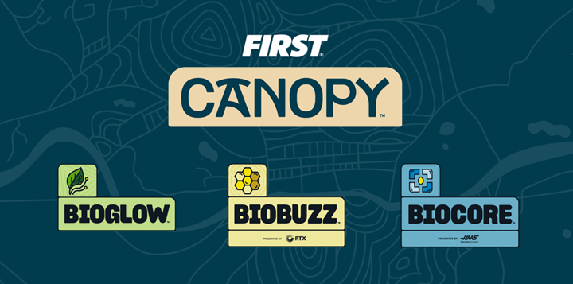

用FIRST设计一个繁荣的星球
地球上没有任何东西可以独自繁荣.每个基因,物种和生态系统都是生物多样性丰富的网络的一部分,借助STEM作为工具和自然作为灵感, 今天最大胆的创新者正在寻找新的方法来加强保护我们共同家园的联系.
这座建筑.解决问题.通过团队合作变得更强大.
欢迎来到FIRST ® CANOPY ™, 我们的2026-2027机器人赛季灵感来自大自然.

LEARN MORE: https://www.firstinspires.org/first-canopy